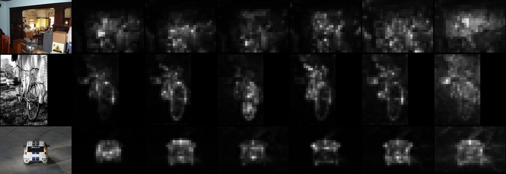
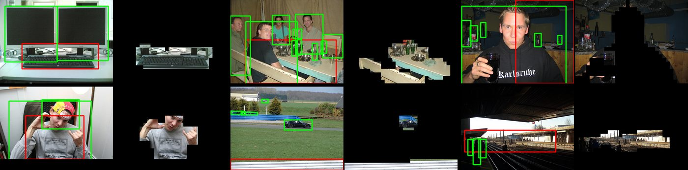

Object Discovery with No Labels from Self-Supervised Transformer Features
Finding objects in images without a single annotation — by clustering the self-attention of a self-supervised Vision Transformer into foreground and background, one image at a time.
Motivation
Supervised object detectors need boxes for every object — expensive, and biased toward whatever was labelled. DINO showed that a Vision Transformer trained with self-distillation learns attention maps that light up on salient foreground regions, with no labels at all. But those raw maps are noisy and split across many attention heads, so they can't be used for object discovery directly.

Method
I proposed an iterative clustering method that operates on the token features from the last self-attention layer. It successively merges token clusters until only two remain — a foreground and a background — from which a bounding box is extracted. Crucially, unlike prior box-comparison approaches, the method never looks at relationships between images: it processes each image independently, so it scales indefinitely with dataset size.
Three heuristics measurably improved accuracy:
- Non-uniform token sampling — concentrating tokens where the attention signal is strongest.
- Explicit colour-statistic injection — augmenting token features with colour information.
- Weighted attention masks — for sharper foreground/background separation.
Results
Benchmarked against the then-state-of-the-art LOST and TokenCut, using CorLoc (correct-localisation rate):
| Dataset | CorLoc |
|---|---|
| PASCAL VOC 2007 | 54.9 |
| PASCAL VOC 2012 | 55.1 |
| COCO 20k | 51.0 |
An oracle analysis showed the same pipeline could reach CorLoc up to ~80 with a better cluster-selection step — pointing to clear, concrete directions for future work rather than a fundamental ceiling.

Stack & methods
Supervised by Prof. Jean-Philippe Thiran, Dr. Behzad Bozorgtabar, and Thomas Stegmüller (EPFL LTS5).